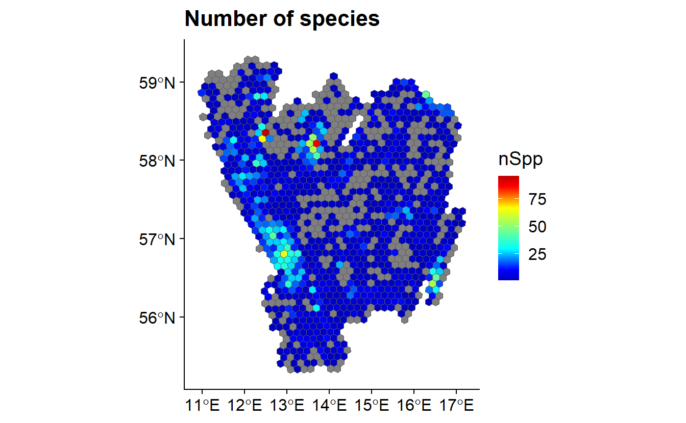

4 Fitness for use
Knowledge of the quality of data available is very important. Quantifying gaps in data taxonomic, temporal and spatial is an important step. The R package BIRDS provides a resource to do all of these things. It can:
- Summarise spatial distribution of records;
- Summarise the temporal distribution of records; and
- Thorugh the implementation of ignorance scores, summarise likely gaps in biodiversity knowledge.
library(BIRDS)
data("bryophytaObs")
data("gotaland")
OB <- organiseBirds(bryophytaObs)
grid <- makeGrid(gotaland, gridSize = 10)
SB <- summariseBirds(OB, grid)

4.1 Bias
All data sets are biased to some degree. For field data, the structure of data gathering should be robust enough to reduce the effects of bias to a minimum. Data downloaded from biodiversity databases are by their nature from different sources. Such sources may have differing causes of bias and it is important to consider if and how such biases will affect research.
Sources of bias may include:
- accesibility of the landscape;
- human population density;
- distribution of expertise;
- “Charisma” of the taxa;
There is a large body of literature on different methods which may be employed. One of the simplest is the selection of background points with the same spatial bias as taxa which are searched for in the manner (Phillips et al. 2009). Such a layer can be produced using 2-dimensional kernel estimation through the MASS package
library(raster)
library(BIRDS)
library(MASS)
data("bryophytaObs")
Sample_bias_layer <- raster( MASS::kde2d(
x = bryophytaObs$decimalLongitude,
y = bryophytaObs$decimalLatitude,
h = c(100,200),
lims = c(10,20,55,60)))More complex methods of accounting for bias can be created by more explicitly modelling accessibility or the behavior of recorders themselves. There are resources for doing this, including:
- recorderMetrics - Data derived metrics of recorder behaviour (August et al. 2020)
- Sampbias - Bayesian analysis to quantify the effects of accessibility on species occurrance sets [zizka_sampbias_2020]
Spatial sorting or disaggregating presence points can reduce the effects of bias:
- ENMeval - Provides methods for quickly spatially aggregating presence points for model building;
- spThin - Randomly thins the number of presences used for a model by an agreed distance. THis
References
August, Tom, Richard Fox, David B. Roy, and Michael J. O. Pocock. 2020. “Data-Derived Metrics Describing the Behaviour of Field-Based Citizen Scientists Provide Insights for Project Design and Modelling Bias.” Scientific Reports 10 (1): 1–12. https://doi.org/10.1038/s41598-020-67658-3.
Phillips, Steven J., Miroslav Dudík, Jane Elith, Catherine H. Graham, Anthony Lehmann, John Leathwick, and Simon Ferrier. 2009. “Sample Selection Bias and Presence-Only Distribution Models: Implications for Background and Pseudo-Absence Data.” Ecological Applications 19 (1): 181–97. https://doi.org/10.1890/07-2153.1.